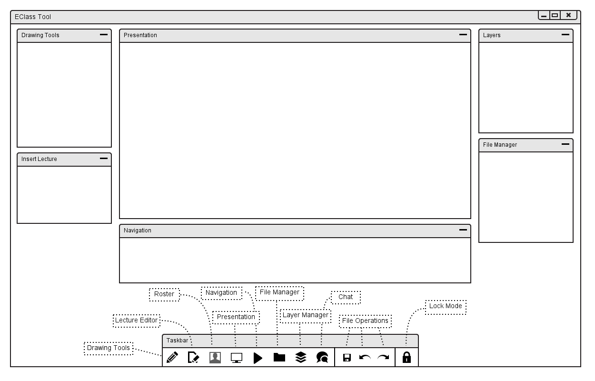
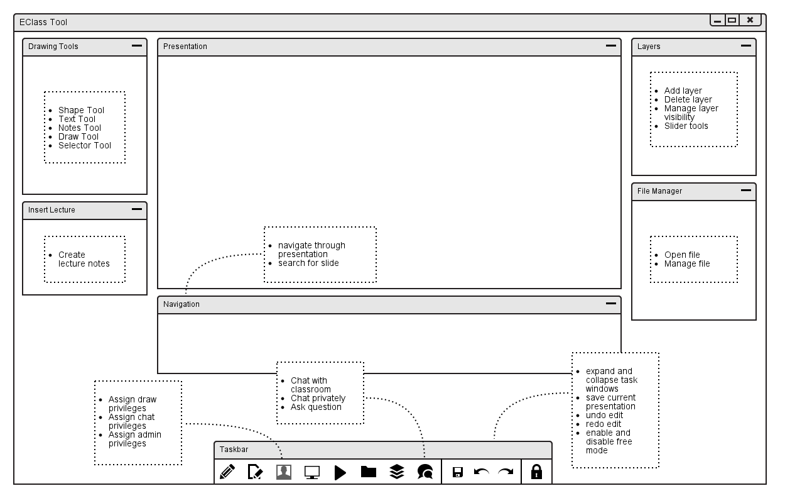
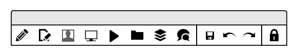
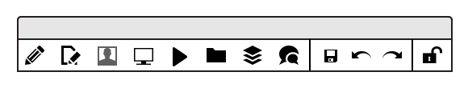

When the user initially invokes the EClassroom tool, the screen appears as shown
in Figure 1.

Figure 1: Initial screen.
Figure 2 shows an expansion of each windows tasks.
Drawing Tools is a toolbox window available for users to take notes, using a lecture slide as the canvas. The different tools available are overlays for writing or drawing on a lecture slide, a drawing tool for drawing brush strokes, a note-object tool for adding "post-it" notes, a selector tool for selecting Drawing Tool objects to modify, a text tool for typing, and a shape tool for drawing predefined shapes onto the lecture slide.
Lecture Editor is a task window that allows for the creation of new presentations through pre-formatted layout lecture content or through an HTML editor for custom layouts of a slide.
Roster is a task window with a list of registered students in the classroom and the options for what each student is able to do in the classroom. For example, there are flags for whether a student is able to draw on a lecture slide or interact in the class chat. There is also a flag for whether a student user has the option to manage the roster as well, indicating the student to be a TA. If a student has a question (asked in the Chat), the instructor will be notified through the Roster.
Presentation/Navigation is a dual-window combination that is the main view for the instructor to present a lecture, for a student to view and take notes on a lecture, or for the class to view the current public layer the instructor has assigned. Navigation windows allows for the student to navigate through a lecture while the instructor is lecturing on a separate slide.
File Manager allows for either the creation of new presentations (with the help of the Lecture Editor) or imports of a previously-made presentation from the program's database or from the user's local computer.
Layer Manager is a task window the user interacts with to sort the layers of Drawing Tool objects and notes taken for a specific lecture slide. The tools provided gives the user the ability to change the opacity of the background of a layer or the opacity of the objects in a given layer.
Chat is the main interaction window between students and instructor.
Users are able to participate in the main Class chat or have separate chats
for partner or team work. A user also asks questions, both privately and
publicly, in the Class chat.

Figure 2: Expanded windows tasks.
2.1.1. Command Summary for Instructors
2.1.2. Command Summary for Registered Students
The interface for student users is a proper subset of the instructor user interface. The following are present in the registered student user interface (depending on the flags set by the roster and/or taskbar tools):
2.1.3. Command Summary for Guests
The interface for guest users is a proper subset of the instructor and student user interfaces. The following are present in the guest interface (depending on the flags set by the roster and/or taskbar tools):
The task bar interface for users is a way to toggle the displays of the different task windows. After start up, the initial display has the presentation, navigation, drawing tools, lecture insertions, overlay tool, and file manager task windows expanded. The roster and the chatbox are initially collapsed and are accessible through the icons represented in the task bar interface.

Figure 3: Fixed task bar interface.
Figure 3 shows the fixed display of the task bar interface.
Typical `Edit' menu commands such as `Save', `Undo', and `Redo' are displayed as image icons in the task bar interface to the right of the task window icons.
To the far most right of the task bar interface, the instructor-user interface chooses the lock icon to put the entire class of student-users into "lockdown mode". This mode lets the instructor present and/or edit lectures freely while students have no access to the program at all.
Figure 4: Lock icon displaying that the class is in free mode.
Figure 3 displays when the instructor-user has the class in lockdown mode as shown by the locked image icon. Figure 4 shows when the instructor-user has the students have access to the program in free mode, shown by the unlocked image icon.